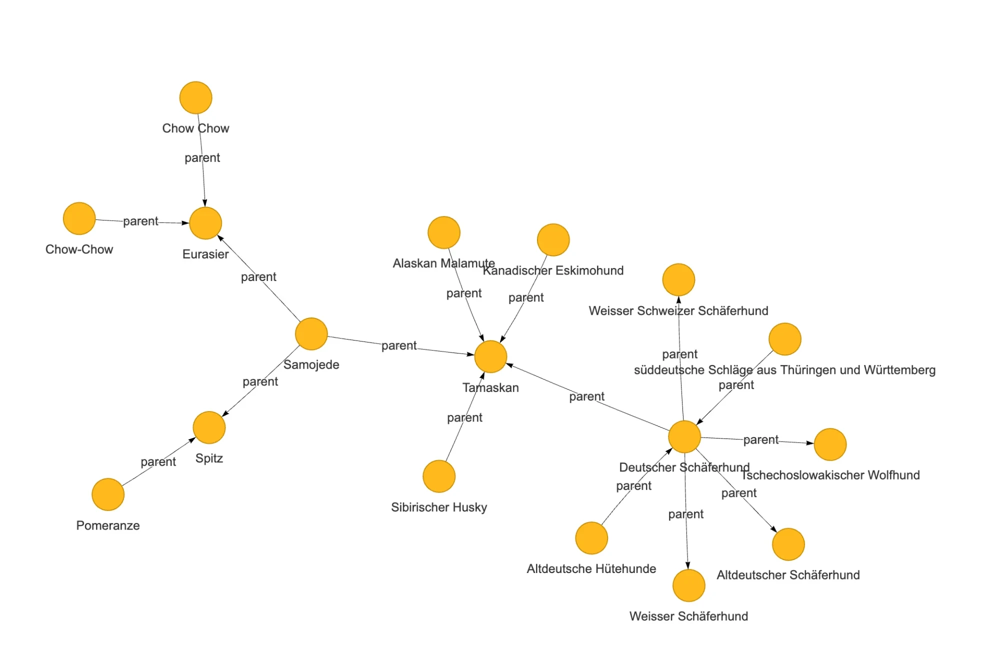
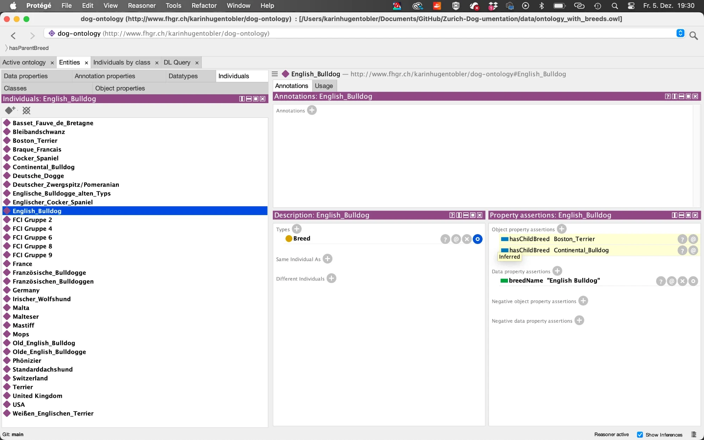
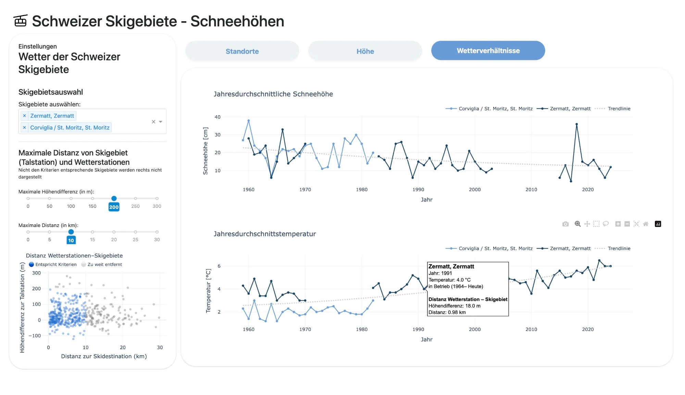
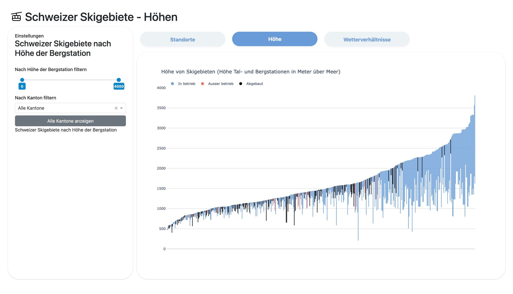
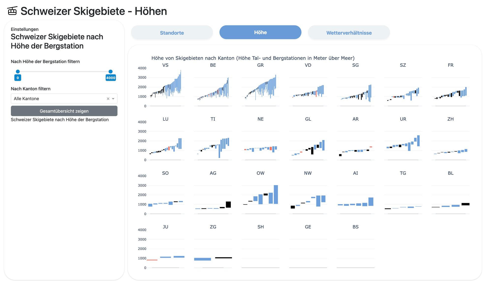
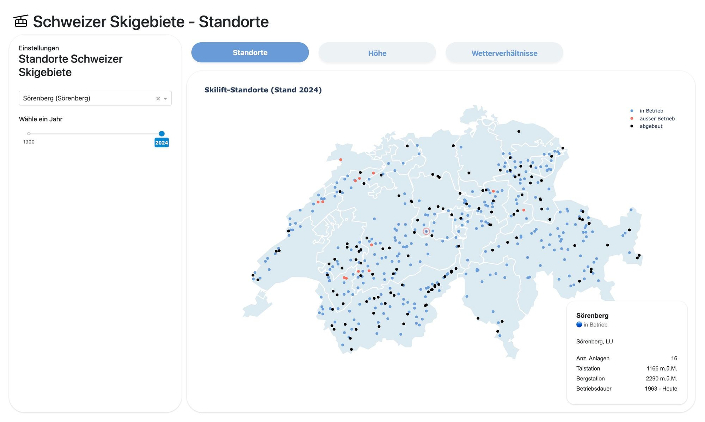
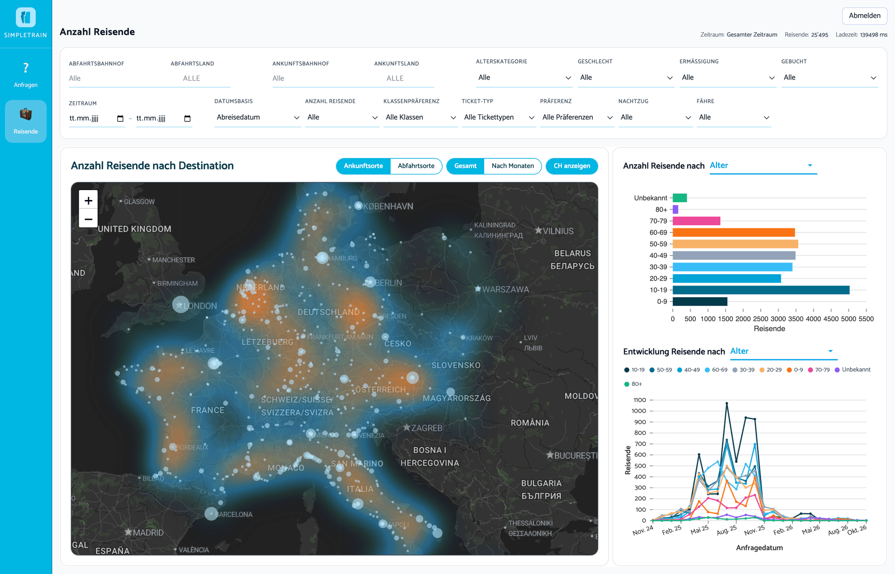
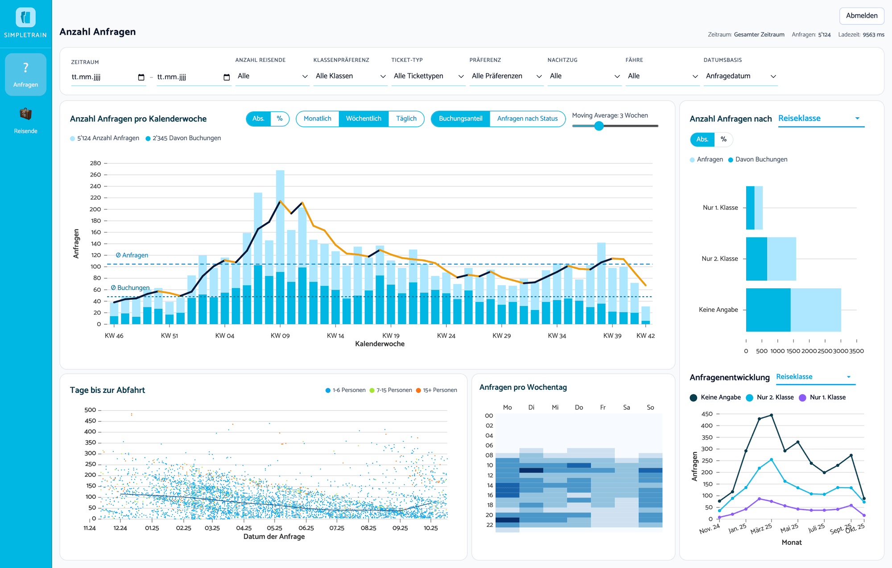
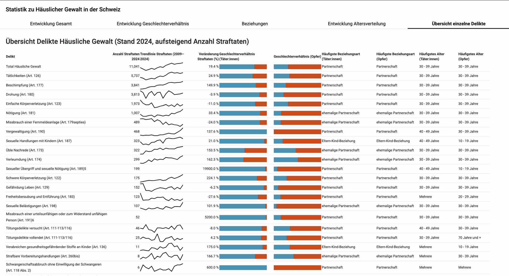

Foto
Das Zürcher Hunderegister, angereichert mit Wissen aus DBpedia und Wikipedia (Grösse, Herkunft, Typ der Rasse), um Muster («Pawterns») zu entdecken. Wissensextraktion mit SPARQL/RDF, dargestellt mit Streamlit.
Grösste Herausforderung: die Rassennamen im Register (auf Deutsch, abgekürzt oder Mischlinge) den richtigen Einträgen in DBpedia und Wikipedia zuzuordnen.
Lösung: mit einem Sprachmodell die Rassennamen bereinigen, Lücken füllen und sie den richtigen Einträgen zuordnen.

Beziehungen zwischen den Rassen aus der Ontologie: Welche Rasse stammt von welcher ab (hasParentBreed)?

Die Ontologie in Protégé: Rassen, FCI-Gruppen und Länder sind verknüpft, sodass ein Reasoner weitere Beziehungen ableiten kann – beispielsweise, welche Rassen von der Englischen Bulldogge abstammen.
Analyse von Daten zu geschlossenen und stillgelegten Schweizer Skiliften im Zusammenhang mit Wetter- und Klimadaten, umgesetzt mit Dash.
Grösste Herausforderung: Verbinden von Skilift- und Klimadaten, die sich in Standort, Höhenlage und Detailgrad der Zeitangaben unterscheiden.
Lösung: die Nutzenden selbst entscheiden lassen, wie genau eine Wetterstation zu einem Skilift passen muss (maximale Distanz und Höhenunterschied), und die Lücken in den Daten klar kommunizieren.




Die Datenbank von SimpleTrain anbinden und visualisieren, umgesetzt mit Python, FastAPI, React und Plotly (die Bilder zeigen Beispieldaten).
Grösste Herausforderung: ein Gefühl für die Daten bekommen und verschiedene Sichtweisen für verschiedene Anwendungsfälle verbinden.
Lösung: getrennte Ansichten mit verschiedenen Schwerpunkten, etwa wie sich die Anfragen über die Zeit entwickeln (für das Team) oder wohin die Reisenden fahren (für das Marketing), regelmässig mit dem Team getestet.


Statistiken zu häuslicher Gewalt in der Schweiz, umgesetzt mit Dash.
Grösste Herausforderung: viele Straftaten mit Zahlen über mehrere Jahre, was schnell unübersichtlich wird.
Lösung: eine Übersichtstabelle mit kleinen Diagrammen pro Straftat, damit man das Gesamtbild auf einen Blick erfasst.
